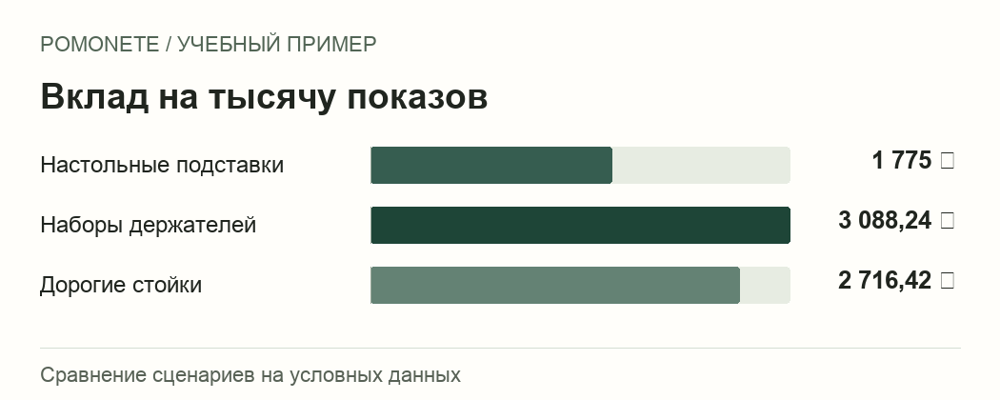

Считаем деньги на Яндекс Маркете на тысячу показов предложения
Как сравнить предложения с разной аудиторией по вкладу на тысячу показов.
При распределении внимания между артикулами селлер может сравнивать конверсию, вклад с продажи или итоговые деньги недели. Предложения с разным числом показов требуют ещё одного разреза. Пересчитаем, какой вклад приходится на тысячу показов, и посмотрим, как его использовать в аналитике Яндекс Маркета.
Что включать во вклад
Составьте по предложению сумму дохода за завершённые продажи и выгрузку переменных расходов, которые к ним относятся. Допишите собственную закупку. Показы возьмите по тем же предложениям и сохраните понятный период связи. Поздние заказы лучше дозакрыть или обозначить незрелые строки. Число 1000 служит масштабом.
Чтобы пересобрать расчёт «Вклад на тысячу показов» для своего магазина, перенесите в него исходные числа. В формуле A обозначает «вклад после переменных затрат, ₽», B обозначает «показы», C обозначает «единица сравнения». Сначала оценивается интенсивность на единицу базы, затем она применяется к новому объёму. Допущение о постоянной интенсивности требует проверки. Запишите рядом период и охват каждого среза. Если для одной строки известна только оценка, оставьте пояснение непосредственно рядом с ней: по итоговой цифре источник уже не восстановить.
Вклад на тысячу показов = A ÷ B × C
| Условие | Вклад после переменных затрат, ₽ | Показы | Единица сравнения | Вклад на тысячу показов |
|---|---|---|---|---|
| Настольные подставки | 42 600 | 24 000 | 1 000 | 1 775 ₽ |
| Наборы держателей | 31 500 | 10 200 | 1 000 | 3 088,24 ₽ |
| Дорогие стойки | 18 200 | 6 700 | 1 000 | 2 716,42 ₽ |

В сценарии «Настольные подставки» в формулу подставляем вклад после переменных затрат, ₽ = 42 600, показы = 24 000, единица сравнения = 1 000. Получается 1 775 ₽. Эта позиция собирает много внимания. Вклад берём после переменных расходов и подтверждённых возвратов.
В сценарии «Наборы держателей» в формулу подставляем вклад после переменных затрат, ₽ = 31 500, показы = 10 200, единица сравнения = 1 000. Получается 3 088,24 ₽. В исходной сводке вклад меньше общего итога подставок, а показов набора существенно меньше.
В сценарии «Дорогие стойки» в формулу подставляем вклад после переменных затрат, ₽ = 18 200, показы = 6 700, единица сравнения = 1 000. Получается 2 716,42 ₽. Редкие покупки дали небольшой абсолютный вклад. Стоимость закупки в строке относится к проданным единицам.
Если «Настольные подставки» взять за исходную точку, «Наборы держателей» меняет показатель «вклад на тысячу показов» на 1 313,24 ₽, а «Дорогие стойки» на 941,42 ₽. Между двумя последними строками разница составляет -371,82 ₽ при вычитании второй из третьей. Смотрите, какой именно вход изменился между строками. Если менялись объём и условия одновременно, итог сравнения относится ко всему сочетанию.
В пересчёте на исходное значение разница второй строки составляет 73,99%. Здесь в знаменателе модуль первого результата, 1 775 ₽. Для показателя в процентах рядом сохраните и абсолютную разницу в процентных пунктах. Для малого исходного значения процентный скачок может оказаться крупным даже при скромном практическом эффекте. В рабочем отчёте оставьте оба исходных значения, чтобы при расширении выборки можно было пересчитать изменение.
Почему метрика падает при расширении
Дополнительные показы могут выходить за пределы аудитории, которой подходил товар. При этом общие деньги способны расти. Разнесите маржинальный вклад исходного и дополнительного объёма, если эксперимент позволяет их отделить. В сводке имеет смысл сохранить обе величины.
Соберите небольшую исходную выборку для «Наборы держателей», прежде чем переносить правило на весь магазин. Нужны отчёт аналитики и история доступности предложения. Среди записей найдите одну обычную и одну с изменённым значением «вклад после переменных затрат, ₽». Убедитесь, что после пересчёта на сопоставимое окно обе строки дают те же результаты, которые видит исполнитель. Для ручных поправок оставьте короткое основание.
Рядом с таблицей показов положите календарь доступности, позиций и цен. Выгрузка агрегатов удобна для первого сигнала, но день с выключенным предложением ломает сравнение. Для каждой крупной группы полезно иметь отдельные суммы числителя и знаменателя. Если у дорогой категории мало показов, сводная конверсия почти полностью повторит поведение ходовых позиций. Для разбора причины начните именно с групп, у которых заметно изменился вклад в суммарную аудиторию.
Что сильнее всего меняет результат
Здесь проверим устойчивость числа 3 088,24 ₽, полученного для «Наборы держателей». Настраиваемые входы: «вклад после переменных затрат, ₽», «показы», «единица сравнения». Меняем по одному параметру с шагом около 10% от его значения. Для небольших исходных чисел разница округляется до доступной целой единицы. Сдвиги ниже относятся к исходному сценарию, поэтому читатель может сопоставить их в одних единицах.
- «Вклад после переменных затрат, ₽» меняется с 31 500 на 34 650. При прежних остальных входах получается 3 397,06 ₽, сдвиг составляет 308,82 ₽.
- «Показы» меняется с 10 200 на 11 220. При прежних остальных входах получается 2 807,49 ₽, сдвиг составляет -280,75 ₽.
- «Единица сравнения» меняется с 1 000 на 1 100. При прежних остальных входах получается 3 397,06 ₽, сдвиг составляет 308,82 ₽.
Наибольшее отклонение в примере связано с параметром «вклад после переменных затрат, ₽» и составляет 308,82 ₽. Сохраните в расчёте, почему выбран именно этот сдвиг. После следующей выгрузки вместо учебных шагов попробуйте подставить разницу между наблюдавшимися периодами. Так проверите, насколько устойчива цифра при фактических колебаниях вашего магазина.
Для дорогих товаров разовый возврат меняет расчёт сильнее, чем несколько сотен дополнительных показов. Пересчитайте строку при одной дополнительной потере с фактической стоимостью. Диапазон покажет, останется ли пример подходящим для решения о продвижении.
Как проверить решение по приоритету
Распределите нагрузку пилота между двумя сопоставимыми предложениями с запасом. После закрытия заказов посчитайте фактический вклад на тысячу показов и общую добавку к вкладу. Если увеличение охвата даёт деньги при меньшем удельном результате, управляйте пределом затрат и проверяйте остатки.
Снимайте второй срез на тех же условиях. Если изменились источники или доли предложений, добавьте таблицу с фиксированным составом товаров и отметьте, какую долю исходной выборки она охватывает. Получатся два наблюдения для двух вопросов: что произошло у магазина в целом и что изменилось у сравнимых позиций. Заказы закрываются со временем, поэтому суммы по завершённым продажам дополните датой проверки.
Заведите карточку наблюдения с тремя числами: исходный ориентир, факт после вмешательства и размер выборки. Для «вклад на тысячу показов» оставьте единицу из таблицы и дату подстановки. В аналитике продавца Яндекс Маркета показатель должен отвечать на тот же вопрос при повторном сборе. Если на следующем цикле изменятся исходники, сохраняйте расхождение вплоть до строки, которую сможет пересчитать коллега.